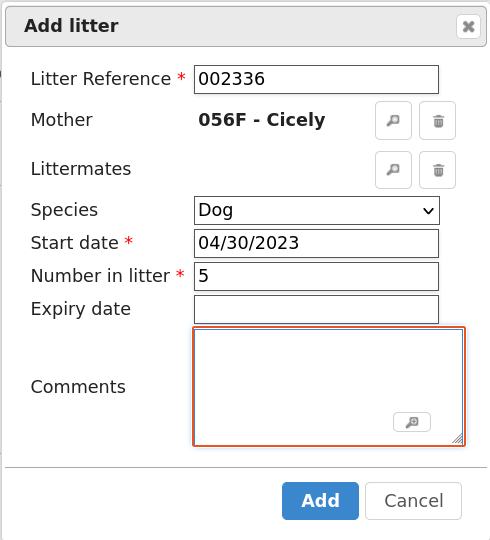

Litters¶
Animal Shelter Manager allows you to track litters as they are born (or come into) the shelter. These facilities are used particularly for generating animal figures.
Mechanism¶

The main screen is accessible from . It shows you a list of all currently active litters on the shelter. A litter is deemed active whilst any of the animals who were part of it are still on the shelter or if it has an expiry date later than today.
If an animal is returned from adoption who was part of an expired litter, the litter will not be resurrected.
The litter holds information about how many animals collectively made it up, who the mother was (if known), what species of animal the litter is and any comments.
Litter Completion¶
The system will check all the animals in the litter daily and the moment the last one has left the shelter through any means other than fostering (if the “Foster animals are shelter inventory” option is on), the litter will be cancelled. It will also be treated as cancelled if the expiry date is set and passed.
From the Edit Litters screen, you can highlight a litter and call up all the animals in that litter. The screen will also show you how many of the litter animals are currently left on the shelter.